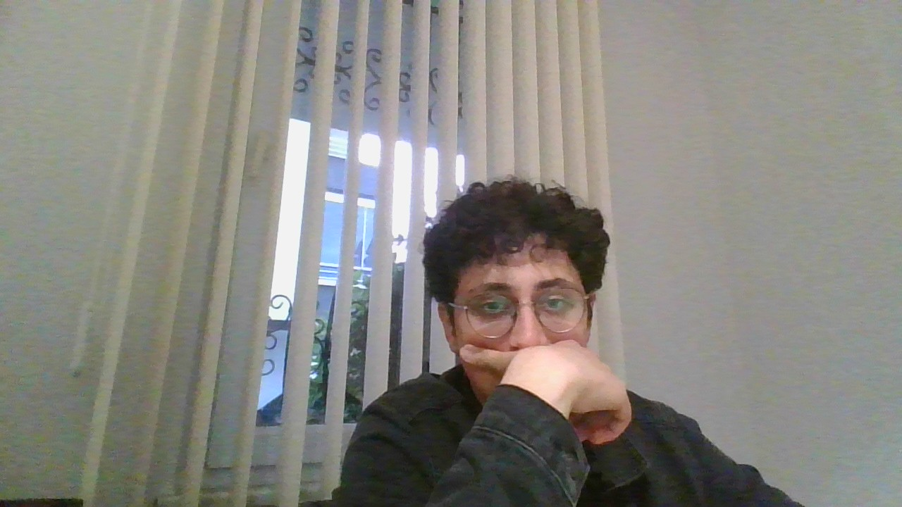

Eymen Yağız Biçer 12 Mart 2010 yılında Ordu'da doğmuştur. Annesinin adı Leyla babasının adı da Erol'dur. 4 kardeşli ailenin en büyük çocuğudur. Yakışıklı adamımız Eymen'in ileride çocuklarına bırakacağı efsane bir oyun mirası vardır. Eymen'in Steam'de 307 oyunu, Epic Games'te 245 ve Microsoft Store'da Minecraft vardır. Ama sorsan Eymen'in üç oyunda öyle bir hesap dizmiştir ki görseniz ağzınızın suyu akar. İlk efsane hesaplı oyunumuz Valorant, Valorant hesabımızda öyle efsane skinler vardır ki VCT26 X Fut Classic'den Kaosun Başlangıcı Vandal'a kadar her silahta efsane skinler vardır. Arkadaşlık atmak isteyen arkadaşlar için (Riot ID: Kendrick LamarEymen). Sıradaki oyunumuz ise Rocket League, bu oyunda Valorant kadar iyi bir hesap dizmesem de gelene mükemmel araçlar, skinler, tekerlekler, şapkalar, gol sevinçleri vb. gibi efsane şeyler vardır. İstek atmak isteyenler için (Epic ID: Aybion). Ve işte o efsane oyuna tabii ki Brawl Stars'a, neler var neler burada karakterler skinler kulübü. Eymen'in Brawl Stars'da kupası bu biyografiyi yazarken kupası 62954. Eymen'in bu biyografiyi yazarken oyundaki karakterlerden 102/102 yani bütün karakterler vardır. Eymen'in en sevdiği ve favori karakteri destansı bir karakter olan Bea'dir. Eymen'in bir de biyografiyi yazarken 873482 kupalı ve başkanı olduğu bir kulübü vardır. Kulüp adı ise ~|IMPARATORS|~'dur. Ekstra olarak Eymen'in 19 tane prestiji vardır. Arkadaşlık atmak istiyorsanız (Supercell ID: Redwhite6152). Eğer Steam için istek atmak için (Steam Arkadaş Kodum: 1507440683) ve Xbox ile PlayStation için de Aybion yazmanız yeterli. Eymen Yağız Biçer bu biyografiyi yazarken Fatih Anadolu Lisesi'nde 10/F'de okumaktadır. Okuldaki en sevdiği ve Eymen'den sonraki en seksi insan olan Kerim Sevgi'li'dir. Kerim salağı 2011 doğumludur yani benden küçüktür :). Eymen 181 cm boyunda 82 kg'dir. Eymen kumral, kıvırcık saçlı, yeşil gözlü, yakışıklı, seksi, boylu ve postludur. Eymen yaşamına devam etmektedir ve hayali Kendrick Lamar'la düet yapmaktır. Son olarak benimle konuşmak isteyenler iletişime yazdığım e-posta adresinden ulaşabilir.
İlkokul eğitimini Durugöl Şehit Bayram Gümüş İlkokulu, ortaokul Büyükşehir Belediyesi Ordu Anadolu İmam Hatip Lisesi (Ortaokul Bölümü) ve lise eğitimini ise Fatih Anadolu Lisesi'nde devam etmektedir.
Riot ID: Kendrick LamarEymen
VCT26 X Fut Classic & Kaosun Başlangıcı Vandal
Epic ID: Aybion
Efsane araçlar, skinler, gol sevinçleri
Supercell ID: Redwhite6152
🏆 62.954 kupa | Kulüp: ~|IMPARATORS|~
102/102 Karakter | 19 Prestij
307 Oyun
Arkadaş Kodum: 1507440683
245 Oyun
ID: Aybion
Bana eymen6152@yahoo.com adresinden ulaşabilirsiniz.